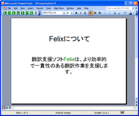
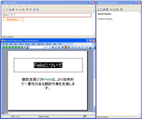
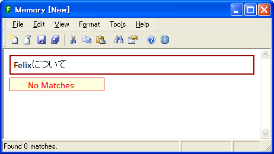
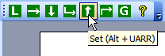
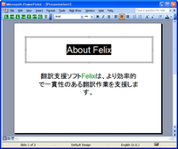
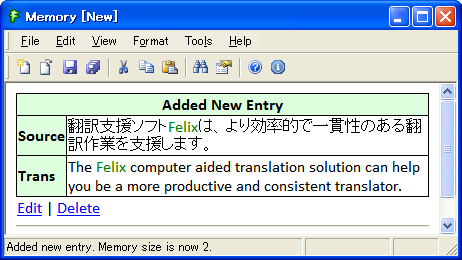
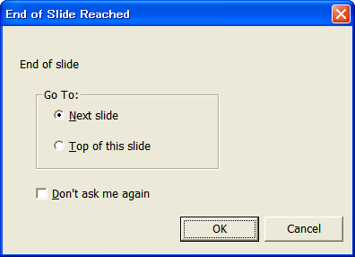
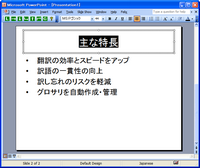

Quick-start Tutorial Using MS PowerPoint¶
This brief tutorial will help you get up and running with Felix for translating documents in Microsoft® PowerPoint.
Launch Felix, and open the document you want to translate in PowerPoint.

Open the Add-ins tab in PowerPoint. From the Felix menu, select Look up Next, or click the right arrow button on the Felix toolbar.

The Felix menu and toolbar on PowerPoint’s Add-ins tab
The first sentence is selected, and looked up in Felix.

Toolbar button
Arrange the PowerPoint, memory, and glossary windows to your liking (I prefer making the glossary window long to the side, so I can see lots of glossary matches at once).

Since you won’t already have a translation memory loaded, it should show that you have no matches.

First sentence looked up in Felix
Translate the sentence, overwriting the original.
After you translate it, put the cursor at the end of the sentence, and select Felix ‣ Set from the menu, or click the up arrow button on the Felix toolbar.

Menu selection

Toolbar button
This will register the translation for the current sentence (“query”) in the Felix window.

First translation is set

Shown in Felix window
Again select Felix ‣ Look up Next from the menu, or click the right arrow to repeat this process.
Translate the next sentence, using the same procedure as above.

The second translation is registered
When you translate the last text box on a slide and then click the right arrow or select Felix ‣ Look up Next, a dialog box will appear and ask whether you’d like to proceed to the next slide, or go back to the top of the current slide.

The End of Slide Reached dialog box appears
If you select Next slide, the first sentence on the next slide will be looked up. Select the “Don’t ask me again” checkbox if you want to make this choice automatically from now on.
If you selected Next slide, the first sentence on the next slide is looked up.

First sentence in second slide is looked up
Carry on translating the document.